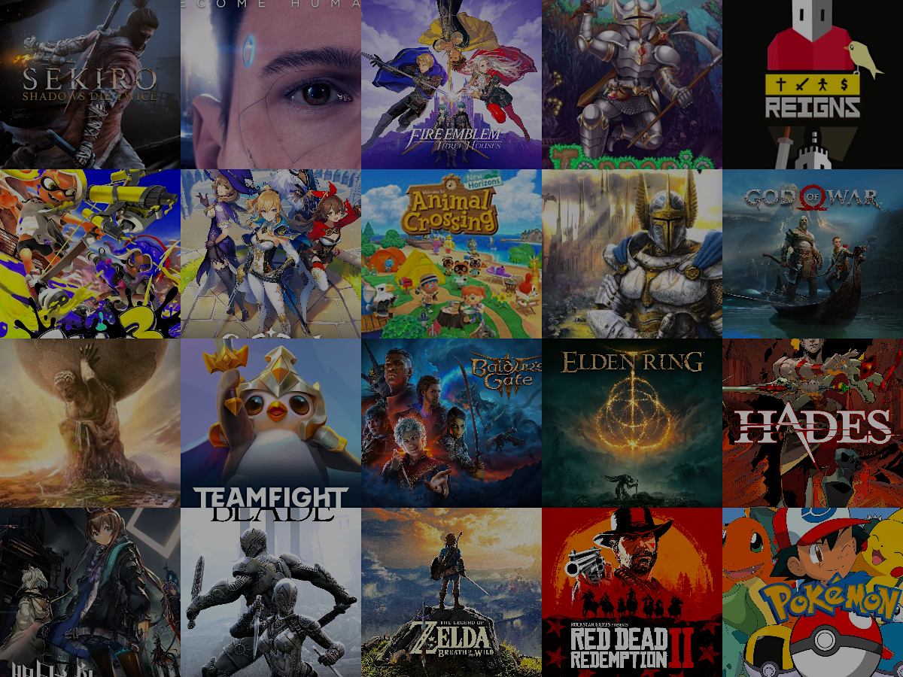

I was born in 2000 in Beijing, China. I am about to graduate from Brown University. I love tech and art. I love to build cool things.
I was born in 2000 in Beijing, China. I am about to graduate from Brown University. I love tech and art. I love to build cool things.
Things I like:
Baldur's Gate / Chef's Table at Brooklyn Fare / DAMN. / Darkest Hour / EVA / 黑梦 / Heroes of Might and Magic / home-cooked meals / John Galliano's designs at Dior / 狂人日记 / The Lovers / 鲁菜 / Mme Kupka among Verticals / Pokémon / Steve Jobs hosting an Apple keynote / working from bed
...
Thinks I dislike:
alcohol / art criticism / commuting / debates / Elon Musk talking nonsense / Gucci / Japanese food that just piles up ingredients / Korean food / many new-gen rappers / Monster Hunter / NFT art / pointless parties / Ready Player One / shooter games / Supreme
...
Besides classic built-in games like Tetris or Minesweeper, my first real dive into video games was with Warcraft III. Fast forward to today, and I've been gaming for nearly 20 years. Here’s a list of my favorite games on different platforms:
PC Heroes of Might and Magic / Baldur's Gate / Terraria / Civilization / Elden Ring
PlayStation Sekiro / Detroit: Become Human / Red Dead Redemption / God of War
Switch Pokémon / Zelda / Fire Emblem / Animal Crossing / Splatoon / Hades
Mobile Infinity Blade / Genshin Impact / Arknights / Teamfight Tactics / Reigns
I've been acting in plays since I was 15, and it's been 8 years now. I've managed to be in at least one play every year. Some of the productions I've been part of include "The Young Lions", an adaptation of "Romeo and Juliet", a film adaptation of "Broadcast Time", and many original plays. I've awared the Most Popular Actor at several theater festivals. For me, theater is just like reading, but more immersive. It's also helped shape my passion for role-playing experiences in games.
I'm actually into quite a few sports, but squash is the most representative for me. I first started playing squash when I began university, invited by a friend who's very important to me, and we ended up playing quite often. During the pandemic, I studied for a while at Peking University's Guanghua School of Management and even led the Guanghua team in a squash competition.
I dabble in many sports but wouldn't call myself an expert in any. I was a swimmer as a kid, but unfortunately, I developed myocarditis in elementary school. The initial diagnosis was that I could never engage in intense physical activity again. However, after rehabilitation, I mostly recovered, though competitive sports were off the table. In high school, I loved hitting the gym, but now, with work being so busy, I mostly exercise just to keep fit.
Don't just get to know me through the text and pictures here. Come chat with me!
Phone +1 401 654 8567 / +86 187 0120 4466
Email felix@dreamin.land / wangyifeifelix@gmail.com